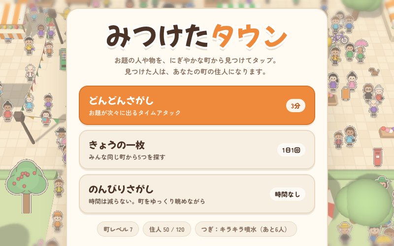
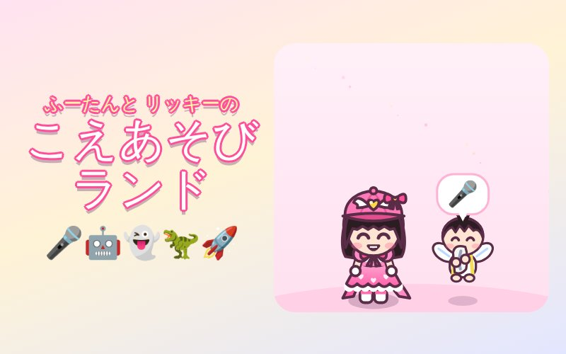
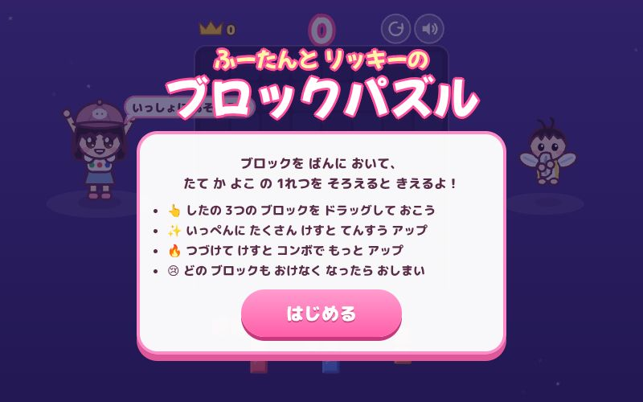
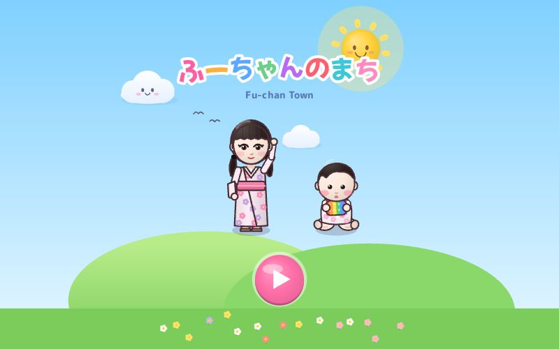

ゲームあつめ
ブラウザで遊べるゲームの一覧です。あそびたい ゲームを えらんでね。
-
 NEWLayerX RadarLayerX の エンジニアブログ・YouTube・Speaker Deck・公式ニュースの 公開情報を ひとつに まとめて キャッチアップする ダッシュボード。6時間ごとに 公開フィード（RSS／Atom・YouTube の チャンネルフィード）を 自動で あつめ、APIキーは つかわない。検索・媒体／テーマで しぼりこみ・既読・あとで読む・学びのメモ（ブラウザ内に保存、エクスポート可）、URL の 手動追加も
NEWLayerX RadarLayerX の エンジニアブログ・YouTube・Speaker Deck・公式ニュースの 公開情報を ひとつに まとめて キャッチアップする ダッシュボード。6時間ごとに 公開フィード（RSS／Atom・YouTube の チャンネルフィード）を 自動で あつめ、APIキーは つかわない。検索・媒体／テーマで しぼりこみ・既読・あとで読む・学びのメモ（ブラウザ内に保存、エクスポート可）、URL の 手動追加も -
 NEWぺたぺた！あそびタウンおいてみたら、あそびが はじまる。ルル・ポン・ミミ・ガク・チョコ・モコ・うさぎの ピョコと、もうふや だんボール、ぼうしや たいこを すきな ばしょに ドラッグで おくと、キャラクターたちが うごきだす。もうふは ひみつきちに、だんボールは くるまや ロケットに、エプロンで おみせやさん。ドレス・ティアラ・ようせいの はね・ねこみみ・しょうぼうしの ぼうしなど かわいい いしょうも いっぱい。たべもの・がっき・バスや ひこうき・たからばこや ふしぎな たまごなど 130しゅるいの アイテムを どの ステージでも つかえるよ。みんなが まねしたり、さそったり、ふざけあったりして あそびが ひろがるよ。おうち・こうえん・ビーチ・キャンプ・ゆうえんち・うちゅうなど 12の ステージ、お題の「ふしぎはっけん」と「おはなし」モード、はっけんアルバムつき。しっぱいも じかんぎれも ない、じぶんだけの ごっこあそび
NEWぺたぺた！あそびタウンおいてみたら、あそびが はじまる。ルル・ポン・ミミ・ガク・チョコ・モコ・うさぎの ピョコと、もうふや だんボール、ぼうしや たいこを すきな ばしょに ドラッグで おくと、キャラクターたちが うごきだす。もうふは ひみつきちに、だんボールは くるまや ロケットに、エプロンで おみせやさん。ドレス・ティアラ・ようせいの はね・ねこみみ・しょうぼうしの ぼうしなど かわいい いしょうも いっぱい。たべもの・がっき・バスや ひこうき・たからばこや ふしぎな たまごなど 130しゅるいの アイテムを どの ステージでも つかえるよ。みんなが まねしたり、さそったり、ふざけあったりして あそびが ひろがるよ。おうち・こうえん・ビーチ・キャンプ・ゆうえんち・うちゅうなど 12の ステージ、お題の「ふしぎはっけん」と「おはなし」モード、はっけんアルバムつき。しっぱいも じかんぎれも ない、じぶんだけの ごっこあそび -
 NEWモンスター・エコーズ 〜ルナフィアと ひかりのクリスタル〜森の 集落リーフェルで 調律師見習いの 主人公と、傷ついた 相棒ルナスライムの 冒険が はじまる ドット絵 モンスター配合RPG。200しゅの まものが すむ せかいで、にくを なげて なかまに し、そだてて 配合！ 血統の 系統と ランクで うまれる こが かわり、とくべつな くみあわせも。いまは 第1章「はじまりの森」（キノコ王モルグ）と 水辺の街ミズナの 配合の館まで あそべます（章は じゅんに ふえていきます）
NEWモンスター・エコーズ 〜ルナフィアと ひかりのクリスタル〜森の 集落リーフェルで 調律師見習いの 主人公と、傷ついた 相棒ルナスライムの 冒険が はじまる ドット絵 モンスター配合RPG。200しゅの まものが すむ せかいで、にくを なげて なかまに し、そだてて 配合！ 血統の 系統と ランクで うまれる こが かわり、とくべつな くみあわせも。いまは 第1章「はじまりの森」（キノコ王モルグ）と 水辺の街ミズナの 配合の館まで あそべます（章は じゅんに ふえていきます） -
 NEWふーたんを さがせ！ひとが いっぱいの いちまいえの どこかに かくれた ふーたん（みつあみ・ピンクの みずたま・きいろい ハートの ポシェット）を さがす ウォーリーふう さがしもの。みつけたら ワープで つぎの ばしょへ！ はるの こうえん・なつの うみ・ゆうえんち・ゆきやま・よるの なつまつり・どうぶつえん・うみの そこ・つきの うちゅうきち・おとぎの おしろ・きょうりゅうの くに・うんどうかい・ハロウィン・えきまえの 13か所。せの ひくい ままや せの たかい パパを みつけると ふーたんが みつけやすく なり、リッキーを みつけると ステージが たのしく へんしん（クジラ・UFO・はなび…）。みつけたら すぐ ガチャガチャ（きせかえ・かくれキャラ・ひみつステージの カギ）。くらやみ・タイムアタックなどの とくべつルールと、かいとう クロニャンの ボスステージも
NEWふーたんを さがせ！ひとが いっぱいの いちまいえの どこかに かくれた ふーたん（みつあみ・ピンクの みずたま・きいろい ハートの ポシェット）を さがす ウォーリーふう さがしもの。みつけたら ワープで つぎの ばしょへ！ はるの こうえん・なつの うみ・ゆうえんち・ゆきやま・よるの なつまつり・どうぶつえん・うみの そこ・つきの うちゅうきち・おとぎの おしろ・きょうりゅうの くに・うんどうかい・ハロウィン・えきまえの 13か所。せの ひくい ままや せの たかい パパを みつけると ふーたんが みつけやすく なり、リッキーを みつけると ステージが たのしく へんしん（クジラ・UFO・はなび…）。みつけたら すぐ ガチャガチャ（きせかえ・かくれキャラ・ひみつステージの カギ）。くらやみ・タイムアタックなどの とくべつルールと、かいとう クロニャンの ボスステージも -

NEWみつけたタウンお題の 人や 物や 動物を、にぎやかな 町の ジオラマから 見つけて タップする さがしものゲーム。3分の「どんどんさがし」、毎日 みんな 同じ町の「きょうの一枚」、時間なしの「のんびりさがし」。似たものを えらぶと「おしい！」で どこが 違うか 教えてくれる。見つけた人は 町の 住人になり、住人が ふえると ふうせん屋さん・花だん・メリーゴーランド…と 町が 育っていく -
 NEWもりのいたずら日和森に すむ ちいさな どうぶつ「コロ」になって、にんげんたちの キャンプじょうを じゆうに たんけんする 3D アドベンチャー。ピクニックの バスケットから ごはんを いただき、みつかったら しげみや テーブルの したに かくれて にげきろう。せんたくものの キャンパーふくで へんそうすれば、ばいてんで かいものも、レンジャーの アルバイトも できる。つり・ボート・たきびの やきマシュマロ・たからさがし・まいごの ぬいぐるみ さがし。ひるから よるへ じかんも ながれる
NEWもりのいたずら日和森に すむ ちいさな どうぶつ「コロ」になって、にんげんたちの キャンプじょうを じゆうに たんけんする 3D アドベンチャー。ピクニックの バスケットから ごはんを いただき、みつかったら しげみや テーブルの したに かくれて にげきろう。せんたくものの キャンパーふくで へんそうすれば、ばいてんで かいものも、レンジャーの アルバイトも できる。つり・ボート・たきびの やきマシュマロ・たからさがし・まいごの ぬいぐるみ さがし。ひるから よるへ じかんも ながれる -
 NEWちょっかいスナップ見て、撮って、ちょっかい。勝手に暮らす人たちを観察し、気になる物を「画像」に取りこんで、だれかに送ってみよう。メガネをふいた父、強火にした母、開いた窓から入ってきた虫……ひとつの出来事が次の出来事を呼ぶ。家の食卓・商店街・キャンプ場・動物園・駅・遊園地の6ステージ、全323イベント。排他の分かれ道、時間切れの結末、イベント図鑑とリプレイつき。
NEWちょっかいスナップ見て、撮って、ちょっかい。勝手に暮らす人たちを観察し、気になる物を「画像」に取りこんで、だれかに送ってみよう。メガネをふいた父、強火にした母、開いた窓から入ってきた虫……ひとつの出来事が次の出来事を呼ぶ。家の食卓・商店街・キャンプ場・動物園・駅・遊園地の6ステージ、全323イベント。排他の分かれ道、時間切れの結末、イベント図鑑とリプレイつき。 -

NEWふーたんと リッキーの こえあそびランドじぶんの こえで あそぼう！ ろくおんした こえを ロボット・おばけ・かいじゅう・やまびこ など 15しゅるいに へんしん。 「だれが・どこで・なにを・どうした」を ろくおんして まぜまぜ すると へんてこ ぶんしょうに！ アカペラ カラオケでは こえだけで うたって てんすう＆かさねどりで ひとりがっしょう！ こえで ドレミの ピアノ、 こえで リズムの ビート、 さかさま ことば チャレンジ、 ちいさな こえで とばす ロケットも -
 NEWキュアたんてい ふーちゃんたんていの ふーちゃんと リッキーが 16の じけんを かいけつ！ だい2ぶ（8わ）は おばけの モヤモヤンが とうじょう。 まちがいさがしや カードあわせも！ むしめがねで てがかり さがし、おいしゃさんで しんさつ、えいごや すうじの なぞとき、へんしんして モンスターと バトル！
NEWキュアたんてい ふーちゃんたんていの ふーちゃんと リッキーが 16の じけんを かいけつ！ だい2ぶ（8わ）は おばけの モヤモヤンが とうじょう。 まちがいさがしや カードあわせも！ むしめがねで てがかり さがし、おいしゃさんで しんさつ、えいごや すうじの なぞとき、へんしんして モンスターと バトル！ -
 NEWふーちゃんと リッキーの キラキラびょういんふーちゃん せんせいと リッキーの びょういん！ しんさつ・レントゲン・きゅうきゅうしゃ・あかちゃんルーム・ぬいぐるみびょういん・めがねやさん・ドクターヘリ など 14の おへやを、 5かいだての びょういんを あるいて まわろう。 あそぶたびに かんじゃさんや びょうきが かわるよ。 ごほうびの おようふくで ふたりを おきがえ！ かんじゃさん ずかん・キラキラ かんじゃさん・まいにちの おねがいスタンプ・メダルで びょういんの そとが どんどん にぎやかに！ となりの しかいいんでは かばさんの はいしゃさん・けんしん・レントゲン・むしばちりょう・そめだし・フッそ・しせきとり・はえかわり・はの かたち・きょうせい・かぶせもの の 11しゅるいの はいしゃさんごっこ！ からだの ふしぎや えいご、 かずも まなべる
NEWふーちゃんと リッキーの キラキラびょういんふーちゃん せんせいと リッキーの びょういん！ しんさつ・レントゲン・きゅうきゅうしゃ・あかちゃんルーム・ぬいぐるみびょういん・めがねやさん・ドクターヘリ など 14の おへやを、 5かいだての びょういんを あるいて まわろう。 あそぶたびに かんじゃさんや びょうきが かわるよ。 ごほうびの おようふくで ふたりを おきがえ！ かんじゃさん ずかん・キラキラ かんじゃさん・まいにちの おねがいスタンプ・メダルで びょういんの そとが どんどん にぎやかに！ となりの しかいいんでは かばさんの はいしゃさん・けんしん・レントゲン・むしばちりょう・そめだし・フッそ・しせきとり・はえかわり・はの かたち・きょうせい・かぶせもの の 11しゅるいの はいしゃさんごっこ！ からだの ふしぎや えいご、 かずも まなべる -

ふーたんと リッキーの ブロックパズルブロックを おいて たて・よこ 1れつ そろえると きえるよ。コンボで キュアふーたんに へんしん！ -

ふーちゃんのまち3Dの しまを おさんぽして、56の アトラクションで あそぼう。あたらしい ゲームセンターには もぐらたたき・ピンボール・メダルおとし など 10しゅるいの アーケードゲーム！ もじの れんしゅうや おうちづくりも！ -
 こっそりトレジャー見つからずに宝物を集めて、億万長者をめざそう！
こっそりトレジャー見つからずに宝物を集めて、億万長者をめざそう！